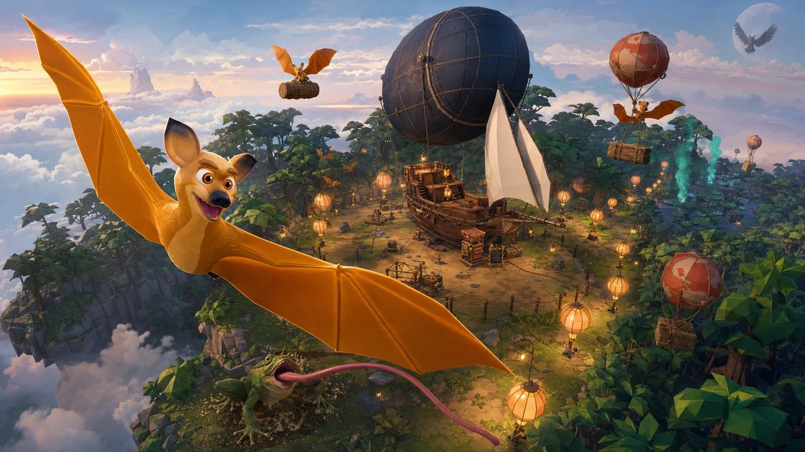
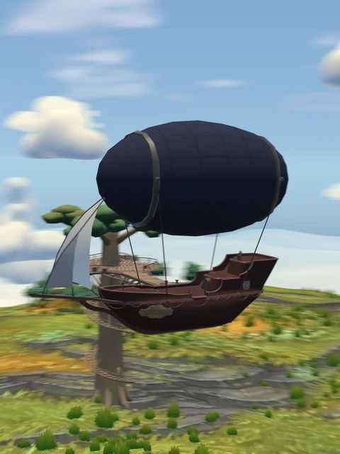
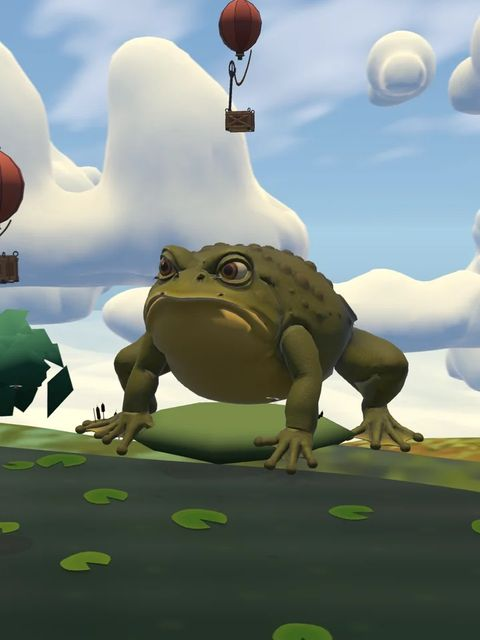
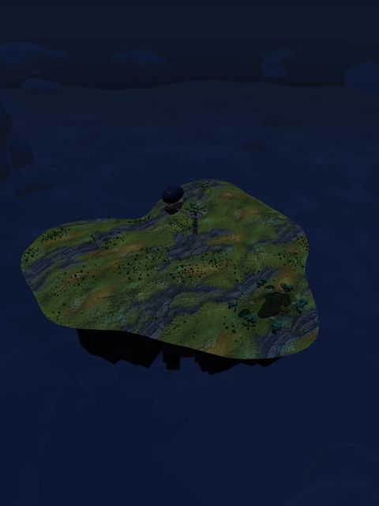

Key art. Balloon Bats, by Mayflower Worlds.
Multiplayer VR · Meta Quest · Early Access
Balloon Bats
Your arms are your wings.
Balloon Bats is a multiplayer VR adventure for Meta Quest. You play a small bat on a floating island high above the clouds, and there is no thumbstick for flying: you flap your real arms to take off, stretch them out to glide, and pull them in to dive. Your own body is the controller, and the sky is yours to figure out.
Every flight starts at the treehouse, with a whole sky outside the door. From there the island opens up: an airship moored among the trees, a marsh dotted with lily pads, and supply balloons drifting just out of reach. Pop the balloons, carry fruit back home, and work toward your New Pioneers Badge.
The island has locals, and not all of them are friendly. Keep an eye on the frogs in the marsh, and keep your wings ready. Stay out past sunset and the same island turns into a different kind of adventure: an owl starts hunting, and the lantern light is your only refuge.
It is better with other bats. You meet other players in the air, find a flying buddy and share the view. The game is in Early Access, and its Discord community helps shape what comes next.
- Platform
- Meta Quest (headset required)
- Players
- Multiplayer
- Status
- Early Access
- Studio
- Mayflower Worlds
Captured in the game

The airship by the treehouse
Mind the locals
The island after dark